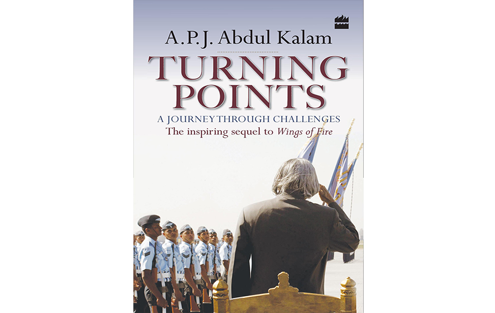

Missile Man of India

Dr. APJ. Abdul Kalam some BOOKS
Children Ask Kalam
Children Ask Kalam Children And Apj Abdul Kalam Indomitable Spirit Have to evolve yourself and shape your life Turning Points A Journey through Challenges Target 3 Billion Innovative Solutions Towards Sustainable.. Envisioning an Empowered Nation Technology for Societal Transformation Ignited Minds Unleasing the power within India My Journey Transforming Dreams into Actions Developments in Fluid Mechanics and Space Technology Manifesto for Change A Sequel to India 2020 India 2020 A Vision for the New Millennium Inspiring Thoughts What would you like to be remembered for? Wings of Fire Self-portrayal of Dr. A.P.J. Abdul Kalam Guiding Souls Dialogues on the Purpose of Life Luminous Spark A Biography in Verse and Colours The Life Tree Poems of Love, Faith and Patriotism Mission India A Vision for Indian Youth You are Unique A life Changing Book Beyond 2020 A Vision for Tomorrow's India ilaigarkalin kalam book Ilaignarkal kaalam Children Ask Kalam Children And Apj Abdul Kalam Indomitable Spirit Have to evolve yourself and shape your life Turning Points A Journey through Challenges Target 3 Billion Innovative Solutions Towards Sustainable.. PrevNext Children Ask Kalam Dear Children Our Former President Dr A.P.J. Abdul Kalam, widely loved and admired by people of all age groups, is very popular with children. His humility, easy accessibility, simplicity, warmth and affection for children make them connect with him. Every day, hundreds of children from every nook and corner of the country wrote to Dr. Kalam asking him questions on a variety of topics. Sharing their concerns Dr. Kalam takes time out to respond to these queries. Children Ask Kalam is unique collection of the communication between Dr Kalam and the children. This book brings Dr.Kalam's view on a variety of topics to a wider audience. The president's answers bring to the fore his multifaceted personality. Though he wrote in simple language, we will find that his answers do not shy away from addressing the most complex of issues. The letters had been selected carefully after much thought. For the purpose of clarity, the book is divided into six themes - education, science, children's issues, nation, spirituality and general. This book brings to fore the concerns of the children of this country and Dr. Kalam's initiatives to alleviate them. We are confident that the book will help us develop an intimate understanding of Dr. Kalam's world view. We expect that the book with its unique and valuable information will assist us in developing a better understanding of Dr. Kalam and keep you well informed about various aspects you know little of but are curious about
Indomitable Spirit
What would you like to be remembered for? You have to evolve yourself and shape your life. You should write it on a page. That page may be a very important page in the book of human history. And you will be remembered for creating that one page in the history of the nation - whether that page is the page of invention, the page of innovation or the page of discovery or the page of fighting injustice' Simple words, spoken directly from the heart, revealing, the former Indian President, Dr.kalam's deep concern for the vital issues. Reflecting upon a wide range of themes of abiding human, national and global concerns, Dr.Kalam's inspiring, almost magical words engage and captivate the reader's mind and heart.
Turning Points
Turning Points, available in paperback, is the sequel to Wings of Fire, which is an autobiography of Dr. A.P.J. Abdul Kalam. But this book talks more about the dreams and visions that Kalam had for the development of India as a country and very less about the person himself. This book takes off from the point in Kalam's life when he became the President of India. From being sworn in as the President and serving his term in the office at the capital, to the endeavors he took up to make his term fruitful, this book describes it all in detail. The book, Turning Points, describes how Kalam faced all the challenges he encountered during his term which began in 2002 and lasted till 2007. This span of time has been portrayed as an eventful golden time for India. Kalam's perseverance efforts to use the office to its optimum has been beautifully described. He made the people and the government concentrate on major issues that were important for the progress and welfare of India. Turning Points: A Journey Through Challenges was published on 1st June, 2012. It talks about the various programs initiated by Kalam like PURA. It made attempts in making the rural areas a part of the growth seen in the general economic sector. Kalam tried to see technological growth in the villages, as he dreamed about the vision he had in mind for India for the new millennium.